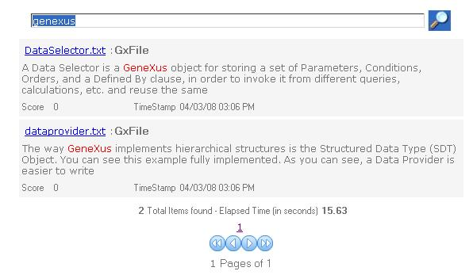

One way of highlighting certain words in a text (for instance when displaying a full text search result) is by using the TextSearch.HTMLPreview function. Suppose you want to provide users with a way of performing full text search queries in disk files. In this example, the webform displays a grid (SearchResultsGrid) which loads all the search results for the given query. We defined the following variables:
The Web Panel's "Search" event is as follows:
Event 'Search'
&SearchResult = TextSearch.Find(&searchpattern,&items,1)
for &SearchResultItem in &SearchResult.Items()
&title = &searchResultItem.Title
&title.Link = &searchResultItem.Viewer
&file.Source = &SearchResultItem.Id
&preview = TextSearch.HTMLPreview(&file,&searchpattern,'HTML','<span STYLE="COLOR: red"> ','</span>',200,1)
SearchResultsGrid.load()
endfor
EndEvent
Note that in this case the TextSearch.HTMLPreview function receives a File DataType variable as the first parameter. The &file variable source is the &SearchResultItem.Id value because the &SearchResultItem.Id value matches the ContentInfo.id value with which the file indexing was done. By default, the ContentInfo.id value for a file is the full name path of the file. Remember the indexing process for files : Full Text Search Examples - Indexing So in runtime..  See also
Full Text Search Data Types
|
| Backlinks |
| Full Text Search Examples |